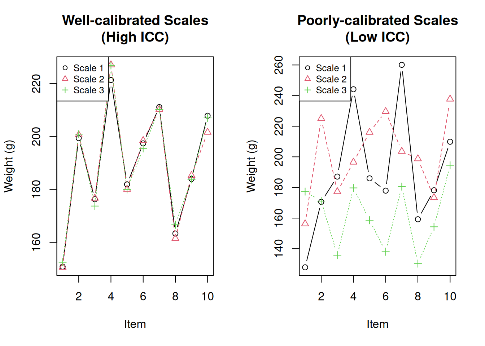
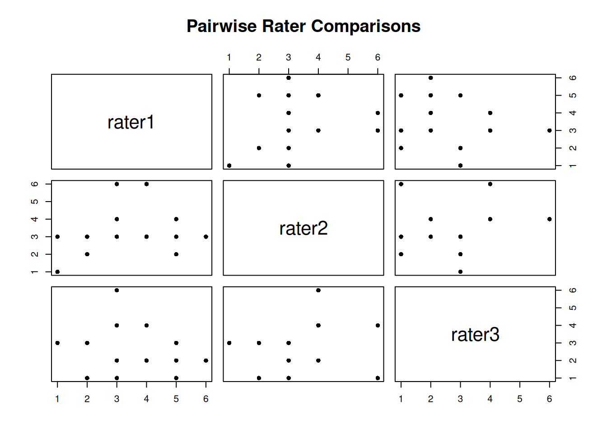
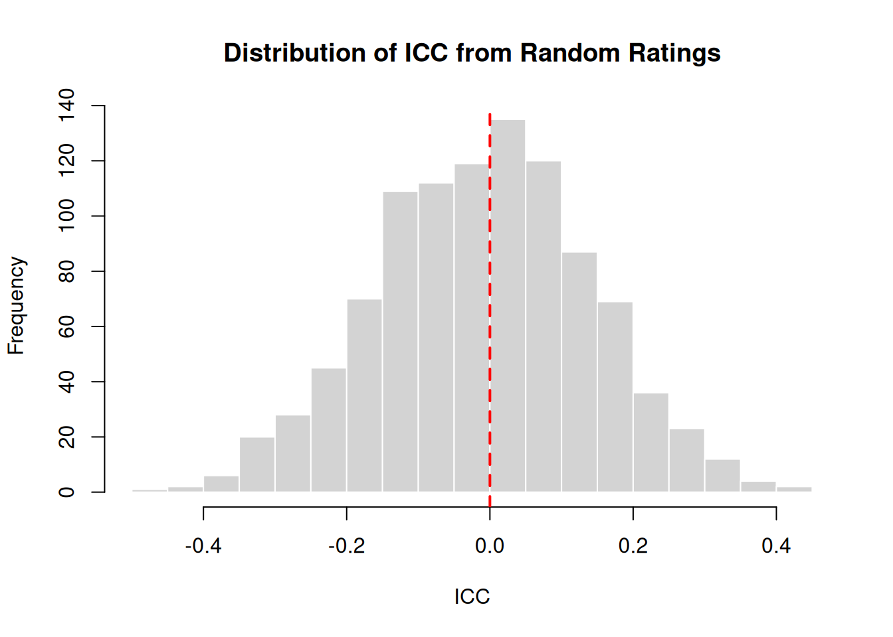
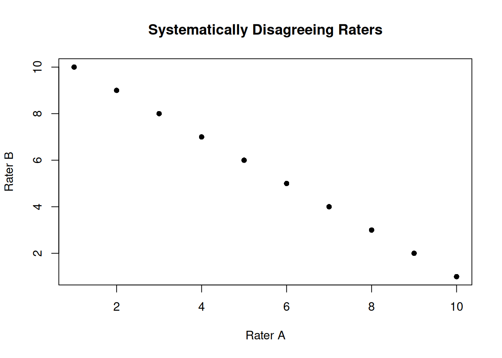

Intraclass correlation coefficient
2026-02-02
Last updated: 2026-02-02
Checks: 7 0
Knit directory: muse/
This reproducible R Markdown analysis was created with workflowr (version 1.7.1). The Checks tab describes the reproducibility checks that were applied when the results were created. The Past versions tab lists the development history.
Great! Since the R Markdown file has been committed to the Git repository, you know the exact version of the code that produced these results.
Great job! The global environment was empty. Objects defined in the global environment can affect the analysis in your R Markdown file in unknown ways. For reproduciblity it’s best to always run the code in an empty environment.
The command set.seed(20200712) was run prior to running
the code in the R Markdown file. Setting a seed ensures that any results
that rely on randomness, e.g. subsampling or permutations, are
reproducible.
Great job! Recording the operating system, R version, and package versions is critical for reproducibility.
Nice! There were no cached chunks for this analysis, so you can be confident that you successfully produced the results during this run.
Great job! Using relative paths to the files within your workflowr project makes it easier to run your code on other machines.
Great! You are using Git for version control. Tracking code development and connecting the code version to the results is critical for reproducibility.
The results in this page were generated with repository version 3df3f26. See the Past versions tab to see a history of the changes made to the R Markdown and HTML files.
Note that you need to be careful to ensure that all relevant files for
the analysis have been committed to Git prior to generating the results
(you can use wflow_publish or
wflow_git_commit). workflowr only checks the R Markdown
file, but you know if there are other scripts or data files that it
depends on. Below is the status of the Git repository when the results
were generated:
Ignored files:
Ignored: .Rproj.user/
Ignored: data/1M_neurons_filtered_gene_bc_matrices_h5.h5
Ignored: data/293t/
Ignored: data/293t_3t3_filtered_gene_bc_matrices.tar.gz
Ignored: data/293t_filtered_gene_bc_matrices.tar.gz
Ignored: data/5k_Human_Donor1_PBMC_3p_gem-x_5k_Human_Donor1_PBMC_3p_gem-x_count_sample_filtered_feature_bc_matrix.h5
Ignored: data/5k_Human_Donor2_PBMC_3p_gem-x_5k_Human_Donor2_PBMC_3p_gem-x_count_sample_filtered_feature_bc_matrix.h5
Ignored: data/5k_Human_Donor3_PBMC_3p_gem-x_5k_Human_Donor3_PBMC_3p_gem-x_count_sample_filtered_feature_bc_matrix.h5
Ignored: data/5k_Human_Donor4_PBMC_3p_gem-x_5k_Human_Donor4_PBMC_3p_gem-x_count_sample_filtered_feature_bc_matrix.h5
Ignored: data/97516b79-8d08-46a6-b329-5d0a25b0be98.h5ad
Ignored: data/Parent_SC3v3_Human_Glioblastoma_filtered_feature_bc_matrix.tar.gz
Ignored: data/brain_counts/
Ignored: data/cl.obo
Ignored: data/cl.owl
Ignored: data/jurkat/
Ignored: data/jurkat:293t_50:50_filtered_gene_bc_matrices.tar.gz
Ignored: data/jurkat_293t/
Ignored: data/jurkat_filtered_gene_bc_matrices.tar.gz
Ignored: data/pbmc20k/
Ignored: data/pbmc20k_seurat/
Ignored: data/pbmc3k.csv
Ignored: data/pbmc3k.csv.gz
Ignored: data/pbmc3k.h5ad
Ignored: data/pbmc3k/
Ignored: data/pbmc3k_bpcells_mat/
Ignored: data/pbmc3k_export.mtx
Ignored: data/pbmc3k_matrix.mtx
Ignored: data/pbmc3k_seurat.rds
Ignored: data/pbmc4k_filtered_gene_bc_matrices.tar.gz
Ignored: data/pbmc_1k_v3_filtered_feature_bc_matrix.h5
Ignored: data/pbmc_1k_v3_raw_feature_bc_matrix.h5
Ignored: data/refdata-gex-GRCh38-2020-A.tar.gz
Ignored: data/seurat_1m_neuron.rds
Ignored: data/t_3k_filtered_gene_bc_matrices.tar.gz
Ignored: r_packages_4.4.1/
Ignored: r_packages_4.5.0/
Untracked files:
Untracked: .claude/
Untracked: CLAUDE.md
Untracked: analysis/bioc.Rmd
Untracked: analysis/bioc_scrnaseq.Rmd
Untracked: analysis/chick_weight.Rmd
Untracked: analysis/likelihood.Rmd
Untracked: bpcells_matrix/
Untracked: data/Caenorhabditis_elegans.WBcel235.113.gtf.gz
Untracked: data/GCF_043380555.1-RS_2024_12_gene_ontology.gaf.gz
Untracked: data/arab.rds
Untracked: data/astronomicalunit.csv
Untracked: data/femaleMiceWeights.csv
Untracked: data/lung_bcell.rds
Untracked: m3/
Untracked: women.json
Unstaged changes:
Modified: analysis/isoform_switch_analyzer.Rmd
Modified: analysis/linear_models.Rmd
Note that any generated files, e.g. HTML, png, CSS, etc., are not included in this status report because it is ok for generated content to have uncommitted changes.
These are the previous versions of the repository in which changes were
made to the R Markdown (analysis/icc.Rmd) and HTML
(docs/icc.html) files. If you’ve configured a remote Git
repository (see ?wflow_git_remote), click on the hyperlinks
in the table below to view the files as they were in that past version.
| File | Version | Author | Date | Message |
|---|---|---|---|---|
| Rmd | 3df3f26 | Dave Tang | 2026-02-02 | More comprehensive guide |
| html | 919a3e6 | Dave Tang | 2026-01-15 | Build site. |
| Rmd | 45cd414 | Dave Tang | 2026-01-15 | EDA on the anxiety dataset |
| html | 8bc482f | Dave Tang | 2025-10-08 | Build site. |
| Rmd | ba999a4 | Dave Tang | 2025-10-08 | ICC with random values |
| html | a0deba9 | Dave Tang | 2025-09-04 | Build site. |
| Rmd | 1edea74 | Dave Tang | 2025-09-04 | Intraclass correlation coefficient |
Introduction
In statistics, the intraclass correlation, or the intraclass correlation coefficient (ICC), is a descriptive statistic that can be used when quantitative measurements are made on units that are organized into groups. It describes how strongly units in the same group resemble each other. While it is viewed as a type of correlation, unlike most other correlation measures, it operates on data structured as groups rather than data structured as paired observations.
For categorical data use Cohen’s or Fleiss’ Kappa.
The Intraclass Correlation Coefficient (ICC) measures the reliability or consistency of measurements made by different observers, instruments, or different methods. The method aims to provide an indication of “how much of the variation observed is due to true differences between samples versus random noise/measurement error?”
For example, if we used three different scales to weigh an item:
- A high ICC (close to 1) would indicate that the three scales give you nearly the same weight, i.e., the scales are reliable, most variation is due to actual size differences.
- A low ICC (close to 0) would indicate that the three scales gave very different readings for the same item, i.e., the scales are unreliable and most variation is measurement error.
The Mathematics Behind ICC
The ICC is fundamentally based on variance decomposition. The basic formula is:
\[ICC = \frac{\sigma^2_{between}}{\sigma^2_{between} + \sigma^2_{within}}\]
Where:
- \(\sigma^2_{between}\) = variance between subjects (true variation)
- \(\sigma^2_{within}\) = variance within subjects (measurement error)
This can be estimated using mean squares from an ANOVA:
\[ICC = \frac{MS_{between} - MS_{within}}{MS_{between} + (k-1) \cdot MS_{within}}\]
Where \(k\) is the number of raters/measurements per subject.
Manual Calculation Example
Let’s calculate ICC manually to understand the concept:
# Three raters measuring 5 subjects
ratings <- data.frame(
rater1 = c(9, 6, 8, 7, 10),
rater2 = c(9, 7, 8, 7, 9),
rater3 = c(8, 6, 9, 8, 10)
)
ratings rater1 rater2 rater3
1 9 9 8
2 6 7 6
3 8 8 9
4 7 7 8
5 10 9 10# Calculate using ANOVA
# Reshape to long format for ANOVA
ratings_long <- data.frame(
subject = factor(rep(1:5, each = 3)),
rater = factor(rep(1:3, times = 5)),
score = c(t(as.matrix(ratings)))
)
# One-way ANOVA
anova_result <- aov(score ~ subject, data = ratings_long)
summary(anova_result) Df Sum Sq Mean Sq F value Pr(>F)
subject 4 19.600 4.900 14.7 0.000342 ***
Residuals 10 3.333 0.333
---
Signif. codes: 0 '***' 0.001 '**' 0.01 '*' 0.05 '.' 0.1 ' ' 1# Extract mean squares
ms_between <- summary(anova_result)[[1]]["subject", "Mean Sq"]
ms_within <- summary(anova_result)[[1]]["Residuals", "Mean Sq"]
k <- 3 # number of raters
# Calculate ICC(1,1)
icc_manual <- (ms_between - ms_within) / (ms_between + (k - 1) * ms_within)
cat("Manual ICC(1,1):", round(icc_manual, 3), "\n")Manual ICC(1,1): 0.82 # Verify with irr package
icc(ratings, model = "oneway", unit = "single")$value[1] 0.8203593R package
The irr package in R can be used to calculate various coefficients of Interrater Reliability and Agreement:
Coefficients of Interrater Reliability and Agreement for quantitative, ordinal and nominal data: ICC, Finn-Coefficient, Robinson’s A, Kendall’s W, Cohen’s Kappa, …
We will use {irr} to calculate the Intraclass Correlation Coefficient, so we will need to install the package.
install.packages("irr")icc
Specificially, we will use the icc() function and from
the documentation:
Computes single score or average score ICCs as an index of interrater reliability of quantitative data. Additionally, F-test and confidence interval are computed.
The input parameters include:
ratings- \(n \times m\) matrix or dataframe, \(n\) subjects \(m\) raters.model- a character string specifying if a “oneway” model (default) with row effects random, or a “twoway” model with column and row effects random should be applied. You can specify just the initial letter.type- a character string specifying if “consistency” (default) or “agreement” between raters should be estimated. If a “oneway” model is used, only “consistency” could be computed. You can specify just the initial letter.unit- a character string specifying the unit of analysis: Must be one of “single” (default) or “average”. You can specify just the initial letter.
Practical Example: Weighing Items
Let’s create a concrete example where three scales are used to weigh 10 items:
set.seed(1984)
# True weights of 10 items (unknown in practice)
true_weights <- c(150, 200, 175, 225, 180, 195, 210, 165, 185, 205)
# Scenario 1: Three well-calibrated scales (high ICC expected)
scale1_good <- true_weights + rnorm(10, mean = 0, sd = 2)
scale2_good <- true_weights + rnorm(10, mean = 0, sd = 2)
scale3_good <- true_weights + rnorm(10, mean = 0, sd = 2)
good_scales <- data.frame(
scale1 = scale1_good,
scale2 = scale2_good,
scale3 = scale3_good
)
cat("Good scales - ICC:\n")Good scales - ICC:icc(good_scales, model = "twoway", type = "agreement") Single Score Intraclass Correlation
Model: twoway
Type : agreement
Subjects = 10
Raters = 3
ICC(A,1) = 0.993
F-Test, H0: r0 = 0 ; H1: r0 > 0
F(9,18.6) = 369 , p = 4.42e-19
95%-Confidence Interval for ICC Population Values:
0.979 < ICC < 0.998# Scenario 2: Three poorly calibrated scales (low ICC expected)
scale1_bad <- true_weights + rnorm(10, mean = 0, sd = 20)
scale2_bad <- true_weights + rnorm(10, mean = 5, sd = 25)
scale3_bad <- true_weights + rnorm(10, mean = -10, sd = 30)
bad_scales <- data.frame(
scale1 = scale1_bad,
scale2 = scale2_bad,
scale3 = scale3_bad
)
cat("\nBad scales - ICC:\n")
Bad scales - ICC:icc(bad_scales, model = "twoway", type = "agreement") Single Score Intraclass Correlation
Model: twoway
Type : agreement
Subjects = 10
Raters = 3
ICC(A,1) = 0.211
F-Test, H0: r0 = 0 ; H1: r0 > 0
F(9,16.8) = 2.24 , p = 0.0737
95%-Confidence Interval for ICC Population Values:
-0.058 < ICC < 0.613Visualise the difference:
par(mfrow = c(1, 2))
# Good scales
matplot(1:10, good_scales, type = "b", pch = 1:3, col = 1:3,
xlab = "Item", ylab = "Weight (g)", main = "Well-calibrated Scales\n(High ICC)")
legend("topleft", legend = c("Scale 1", "Scale 2", "Scale 3"),
pch = 1:3, col = 1:3, cex = 0.8)
# Bad scales
matplot(1:10, bad_scales, type = "b", pch = 1:3, col = 1:3,
xlab = "Item", ylab = "Weight (g)", main = "Poorly-calibrated Scales\n(Low ICC)")
legend("topleft", legend = c("Scale 1", "Scale 2", "Scale 3"),
pch = 1:3, col = 1:3, cex = 0.8)
par(mfrow = c(1, 1))ICC vs. Correlation
ICC and Pearson correlation measure different things. Correlation measures the linear relationship between variables, while ICC measures agreement.
# Example: High correlation but low ICC (systematic bias)
set.seed(1984)
rater1 <- 1:20
rater2 <- rater1 + 10 # Same pattern but shifted by 10
biased_ratings <- data.frame(rater1, rater2)
cat("Pearson correlation:", cor(rater1, rater2), "\n")Pearson correlation: 1 cat("ICC (agreement):", icc(biased_ratings, model = "twoway", type = "agreement")$value, "\n")ICC (agreement): 0.4117647 cat("ICC (consistency):", icc(biased_ratings, model = "twoway", type = "consistency")$value, "\n")ICC (consistency): 1 The correlation is perfect (r = 1) because the raters follow the same pattern. However, the ICC for agreement is lower because the raters systematically differ by 10 units. The ICC for consistency is high because the raters are consistent in their relative rankings.
Key Differences from Similarity Indices
| Feature | Similarity Indices (Horn-Morisita, etc.) | ICC |
|---|---|---|
| Compares | Pairs of samples | Groups of replicates |
| Output | Matrix of all pairwise comparisons | Single value (0-1) |
| Question | “How similar are A and B?” | “How reliable/reproducible is my method?” |
| Use case | Compare specific samples | Assess overall reproducibility |
Types of ICC
There are six different ICC formulas depending on your study design, organised into three models with two variants each:
Model Selection
| Model | Description | When to Use |
|---|---|---|
| One-way random | Different raters for each subject | Raters are randomly sampled from a larger population and each subject gets different raters |
| Two-way random | Same raters for all subjects, raters are random sample | Raters are a random sample from a population of raters |
| Two-way mixed | Same raters for all subjects, raters are fixed | These specific raters are the only ones of interest |
Unit Selection
| Unit | Notation | When to Use |
|---|---|---|
| Single | ICC(1,1), ICC(2,1), ICC(3,1) | You want reliability of a single measurement |
| Average | ICC(1,k), ICC(2,k), ICC(3,k) | You will average multiple raters’ scores |
Choosing the Right ICC
# Same data, different ICC types
data(anxiety)
cat("ICC(1,1) - One-way, single:\n")ICC(1,1) - One-way, single:print(icc(anxiety, model = "oneway", unit = "single")) Single Score Intraclass Correlation
Model: oneway
Type : consistency
Subjects = 20
Raters = 3
ICC(1) = 0.175
F-Test, H0: r0 = 0 ; H1: r0 > 0
F(19,40) = 1.64 , p = 0.0939
95%-Confidence Interval for ICC Population Values:
-0.077 < ICC < 0.484cat("\nICC(2,1) - Two-way random, single, consistency:\n")
ICC(2,1) - Two-way random, single, consistency:print(icc(anxiety, model = "twoway", type = "consistency", unit = "single")) Single Score Intraclass Correlation
Model: twoway
Type : consistency
Subjects = 20
Raters = 3
ICC(C,1) = 0.216
F-Test, H0: r0 = 0 ; H1: r0 > 0
F(19,38) = 1.83 , p = 0.0562
95%-Confidence Interval for ICC Population Values:
-0.046 < ICC < 0.522cat("\nICC(2,1) - Two-way random, single, agreement:\n")
ICC(2,1) - Two-way random, single, agreement:print(icc(anxiety, model = "twoway", type = "agreement", unit = "single")) Single Score Intraclass Correlation
Model: twoway
Type : agreement
Subjects = 20
Raters = 3
ICC(A,1) = 0.198
F-Test, H0: r0 = 0 ; H1: r0 > 0
F(19,39.7) = 1.83 , p = 0.0543
95%-Confidence Interval for ICC Population Values:
-0.039 < ICC < 0.494cat("\nICC(2,k) - Two-way random, average, agreement:\n")
ICC(2,k) - Two-way random, average, agreement:print(icc(anxiety, model = "twoway", type = "agreement", unit = "average")) Average Score Intraclass Correlation
Model: twoway
Type : agreement
Subjects = 20
Raters = 3
ICC(A,3) = 0.425
F-Test, H0: r0 = 0 ; H1: r0 > 0
F(19,37.5) = 1.83 , p = 0.0568
95%-Confidence Interval for ICC Population Values:
-0.137 < ICC < 0.746General guidance:
- If you have the same raters for all subjects (most common), use two-way model
- If you care about absolute agreement (same scores), use type = “agreement”
- If you care about relative consistency (same ranking), use type = “consistency”
- If your final measure will average multiple raters, use unit = “average”
Interpretation Guidelines
Koo and Li (2016) provide commonly cited guidelines:
| ICC Value | Interpretation |
|---|---|
| < 0.50 | Poor reliability |
| 0.50 - 0.75 | Moderate reliability |
| 0.75 - 0.90 | Good reliability |
| > 0.90 | Excellent reliability |
Note that these are general guidelines. The acceptable ICC depends on your specific application. Clinical measurements typically require higher reliability (>0.90) than exploratory research.
Confidence Intervals Matter
Always report the confidence interval, not just the point estimate:
result <- icc(anxiety, model = "twoway", type = "agreement")
cat("ICC:", round(result$value, 3), "\n")ICC: 0.198 cat("95% CI: [", round(result$lbound, 3), ",", round(result$ubound, 3), "]\n")95% CI: [ -0.039 , 0.494 ]If the confidence interval is wide or crosses interpretation thresholds, interpret with caution.
When to Use ICC vs. Similarity Indices
Use ICC when:
- You want a single number summarising reproducibility
- You have multiple replicates per method
- You’re assessing quality control or measurement reliability
Use Similarity Indices when:
- You want to know which specific pairs are similar
- You’re comparing different methods to each other
- You want detailed pairwise comparisons
Comparing Multiple Methods
ICC can be used to compare the reproducibility of different measurement methods:
set.seed(1984)
# Simulate three measurement methods with different reliability
n_subjects <- 20
n_raters <- 3
true_values <- rnorm(n_subjects, mean = 50, sd = 10)
# Method A: Highly reliable (small error)
method_a <- sapply(1:n_raters, function(x) true_values + rnorm(n_subjects, 0, 2))
# Method B: Moderately reliable
method_b <- sapply(1:n_raters, function(x) true_values + rnorm(n_subjects, 0, 5))
# Method C: Poorly reliable (large error)
method_c <- sapply(1:n_raters, function(x) true_values + rnorm(n_subjects, 0, 12))
# Calculate ICC for each method
results <- data.frame(
Method = c("A", "B", "C"),
ICC = c(
icc(method_a, model = "twoway", type = "agreement")$value,
icc(method_b, model = "twoway", type = "agreement")$value,
icc(method_c, model = "twoway", type = "agreement")$value
),
Interpretation = c("Excellent", "Good", "Poor")
)
results Method ICC Interpretation
1 A 0.9768376 Excellent
2 B 0.8667513 Good
3 C 0.3894430 PoorThis comparison shows that Method A produces the most reproducible measurements.
Example: Anxiety Ratings
The anxiety dataset from the {irr} package contains
anxiety ratings by different raters:
The data frame contains the anxiety ratings of 20 subjects, rated by 3 raters. Values are ranging from 1 (not anxious at all) to 6 (extremely anxious).
data(anxiety)
head(anxiety) rater1 rater2 rater3
1 3 3 2
2 3 6 1
3 3 4 4
4 4 6 4
5 5 2 3
6 5 4 2dim(anxiety)[1] 20 3Exploring Rater Agreement
First, let’s examine the correlation between raters:
cor(anxiety) rater1 rater2 rater3
rater1 1.00000000 0.2997446 0.08324405
rater2 0.29974464 1.0000000 0.28152874
rater3 0.08324405 0.2815287 1.00000000High correlations suggest raters rank subjects similarly, but correlation doesn’t tell us about absolute agreement.
pairs(anxiety, pch = 16, main = "Pairwise Rater Comparisons")
Calculate ICC
result <- icc(anxiety, model = "twoway", type = "agreement")
result Single Score Intraclass Correlation
Model: twoway
Type : agreement
Subjects = 20
Raters = 3
ICC(A,1) = 0.198
F-Test, H0: r0 = 0 ; H1: r0 > 0
F(19,39.7) = 1.83 , p = 0.0543
95%-Confidence Interval for ICC Population Values:
-0.039 < ICC < 0.494Understanding the Output
The output provides several pieces of information:
- subjects: Number of subjects being rated (20)
- raters: Number of raters (3)
- ICC type: The specific ICC formula used
- value: The ICC estimate (0.198) - indicates poor agreement
- F-test: Tests if ICC is significantly different from 0
- p-value: Statistical significance of the F-test
- lbound/ubound: 95% confidence interval for ICC
In this example, the ICC of 0.198 indicates poor inter-rater reliability. The raters do not agree well on anxiety levels.
Example: Consistency vs. Agreement
This example demonstrates the difference between consistency and agreement. Three raters measure the same subjects, but each rater has a systematic bias (offset).
set.seed(1984)
r1 <- round(rnorm(20, 10, 4))
r2 <- round(r1 + 10 + rnorm(20, 0, 2)) # Same pattern, +10 offset
r3 <- round(r1 + 20 + rnorm(20, 0, 2)) # Same pattern, +20 offset
ratings_df <- data.frame(r1 = r1, r2 = r2, r3 = r3)
boxplot(ratings_df, main = "Raters with Systematic Bias",
ylab = "Rating", col = c("lightblue", "lightgreen", "lightyellow"))
| Version | Author | Date |
|---|---|---|
| a0deba9 | Dave Tang | 2025-09-04 |
High consistency - raters rank subjects the same way:
icc(ratings_df, model = "twoway", type = "consistency") Single Score Intraclass Correlation
Model: twoway
Type : consistency
Subjects = 20
Raters = 3
ICC(C,1) = 0.892
F-Test, H0: r0 = 0 ; H1: r0 > 0
F(19,38) = 25.8 , p = 4.25e-16
95%-Confidence Interval for ICC Population Values:
0.789 < ICC < 0.952Low agreement - raters give different absolute values:
icc(ratings_df, model = "twoway", type = "agreement") Single Score Intraclass Correlation
Model: twoway
Type : agreement
Subjects = 20
Raters = 3
ICC(A,1) = 0.151
F-Test, H0: r0 = 0 ; H1: r0 > 0
F(19,2.26) = 25.8 , p = 0.0272
95%-Confidence Interval for ICC Population Values:
-0.001 < ICC < 0.441The ICC for consistency (0.898) is much higher than for agreement (0.043). This is because the raters are consistent in their relative rankings (high consistency) but give systematically different scores (low agreement).
Baseline: Random Ratings
What values would we expect from completely random ratings (no true agreement)?
set.seed(1984)
random_iccs <- replicate(
n = 1000,
expr = {
x <- sample(x = 1:100, size = 50)
y <- sample(x = 1:100, size = 50)
icc(cbind(x, y), model = "twoway", type = "agreement")$value
}
)
cat("Mean ICC from random ratings:", round(mean(random_iccs), 4), "\n")Mean ICC from random ratings: -0.0087 cat("SD:", round(sd(random_iccs), 4), "\n")SD: 0.1483 cat("Range:", round(range(random_iccs), 4), "\n")Range: -0.4532 0.4153 hist(random_iccs, breaks = 30, main = "Distribution of ICC from Random Ratings",
xlab = "ICC", col = "lightgray", border = "white")
abline(v = 0, col = "red", lwd = 2, lty = 2)
Random ratings produce ICC values centered around 0, as expected. Values slightly below or above 0 occur due to sampling variation.
Negative ICC Values
ICC can be negative when within-group variance exceeds between-group variance. This can occur when:
- Raters systematically disagree (one rates high when another rates low)
- Random chance with small sample sizes
- Data entry errors
# Example: Raters who systematically disagree
set.seed(1984)
true_scores <- 1:10
rater_a <- true_scores
rater_b <- 11 - true_scores # Reversed ratings
disagreeing_raters <- data.frame(rater_a, rater_b)
plot(rater_a, rater_b, pch = 16, main = "Systematically Disagreeing Raters",
xlab = "Rater A", ylab = "Rater B")
icc(disagreeing_raters, model = "twoway", type = "agreement") Single Score Intraclass Correlation
Model: twoway
Type : agreement
Subjects = 10
Raters = 2
ICC(A,1) = -1.25
F-Test, H0: r0 = 0 ; H1: r0 > 0
F(9,NaN) = 0 , p = NaN
95%-Confidence Interval for ICC Population Values:
NaN < ICC < NaNA negative ICC indicates a problem with the data or measurement process that should be investigated.
Summary
Key points about ICC:
- ICC measures reliability - how consistent are measurements across raters/methods
- Choose the right model - one-way vs two-way depends on your study design
- Agreement vs Consistency - agreement requires same absolute values; consistency requires same relative ranking
- Report confidence intervals - point estimates alone can be misleading
- Interpret in context - acceptable ICC depends on your application
- Sample size matters - larger samples give more precise ICC estimates
Quick Reference
| Scenario | Model | Type |
|---|---|---|
| Different raters for each subject | oneway | consistency |
| Same raters, care about exact values | twoway | agreement |
| Same raters, care about ranking | twoway | consistency |
| Will average multiple measurements | twoway | agreement, unit=“average” |
sessionInfo()R version 4.5.0 (2025-04-11)
Platform: x86_64-pc-linux-gnu
Running under: Ubuntu 24.04.3 LTS
Matrix products: default
BLAS: /usr/lib/x86_64-linux-gnu/openblas-pthread/libblas.so.3
LAPACK: /usr/lib/x86_64-linux-gnu/openblas-pthread/libopenblasp-r0.3.26.so; LAPACK version 3.12.0
locale:
[1] LC_CTYPE=en_US.UTF-8 LC_NUMERIC=C
[3] LC_TIME=en_US.UTF-8 LC_COLLATE=en_US.UTF-8
[5] LC_MONETARY=en_US.UTF-8 LC_MESSAGES=en_US.UTF-8
[7] LC_PAPER=en_US.UTF-8 LC_NAME=C
[9] LC_ADDRESS=C LC_TELEPHONE=C
[11] LC_MEASUREMENT=en_US.UTF-8 LC_IDENTIFICATION=C
time zone: Etc/UTC
tzcode source: system (glibc)
attached base packages:
[1] stats graphics grDevices utils datasets methods base
other attached packages:
[1] irr_0.84.1 lpSolve_5.6.23 lubridate_1.9.4 forcats_1.0.0
[5] stringr_1.5.1 dplyr_1.1.4 purrr_1.0.4 readr_2.1.5
[9] tidyr_1.3.1 tibble_3.3.0 ggplot2_3.5.2 tidyverse_2.0.0
[13] workflowr_1.7.1
loaded via a namespace (and not attached):
[1] sass_0.4.10 generics_0.1.4 stringi_1.8.7 hms_1.1.3
[5] digest_0.6.37 magrittr_2.0.3 timechange_0.3.0 evaluate_1.0.3
[9] grid_4.5.0 RColorBrewer_1.1-3 fastmap_1.2.0 rprojroot_2.0.4
[13] jsonlite_2.0.0 processx_3.8.6 whisker_0.4.1 ps_1.9.1
[17] promises_1.3.3 httr_1.4.7 scales_1.4.0 jquerylib_0.1.4
[21] cli_3.6.5 rlang_1.1.6 withr_3.0.2 cachem_1.1.0
[25] yaml_2.3.10 tools_4.5.0 tzdb_0.5.0 httpuv_1.6.16
[29] vctrs_0.6.5 R6_2.6.1 lifecycle_1.0.4 git2r_0.36.2
[33] fs_1.6.6 pkgconfig_2.0.3 callr_3.7.6 pillar_1.10.2
[37] bslib_0.9.0 later_1.4.2 gtable_0.3.6 glue_1.8.0
[41] Rcpp_1.0.14 xfun_0.52 tidyselect_1.2.1 rstudioapi_0.17.1
[45] knitr_1.50 farver_2.1.2 htmltools_0.5.8.1 rmarkdown_2.29
[49] compiler_4.5.0 getPass_0.2-4